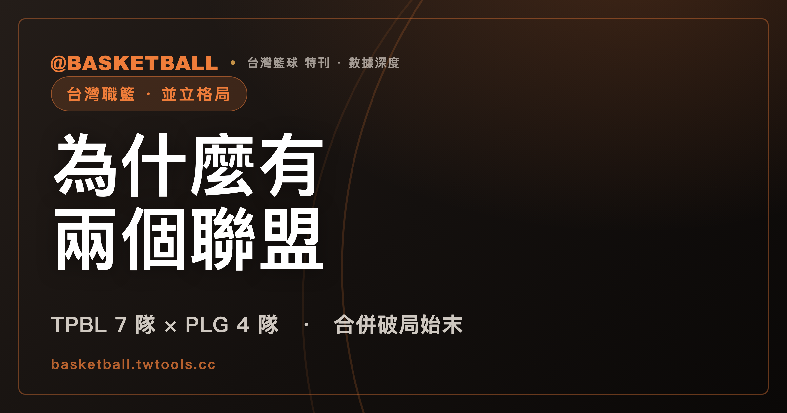

為什麼台灣有兩個職籃聯盟？TPBL 與 P. LEAGUE+ 並立局面完全解析
截至 2026 年 7 月，台灣職籃由 TPBL（7 隊）與 PLG（4 隊）兩聯盟並立；2025 年 7 月一度討論合併，7 月 31 日 TPBL 宣布終止談判，兩聯盟各自運作至今。

TPBL vs. PLG · 兩聯盟並立｜合併破局時間軸 · 戰績總覽 · EASL 爭議
截至 2026 年 7 月，台灣同時存在兩個職業籃球聯盟：由 7 支球隊組成的 TPBL（台灣職籃），以及由 4 支球隊組成的 P. LEAGUE+（PLG）。兩個聯盟各自招募球員、各自安排賽程、各自舉辦選秀，球迷想看哪一隊的比賽，得先確認那支球隊屬於哪個聯盟。這種「兩個聯盟同時運作、球隊互不隸屬」的局面，最關鍵的轉折點落在 2025 年夏天：當時外界一度以為兩聯盟即將整併為單一體系，雙方也確實展開了正式談判，但談判最終沒有走到合併那一步，兩聯盟從此各自運作至今。本文將完整梳理這段合併談判的時間脈絡、兩聯盟各自的球隊與戰績、並立所衍生的實際爭議，以及台灣球員在兩聯盟之外的旅外選項，作為理解台灣職業籃球生態現況的長青指南。對第一次接觸台灣籃球的讀者來說，先記住「TPBL 七隊、PLG 四隊、兩者互不隸屬」這個基本輪廓，後面的時間軸與戰績細節會更容易對照理解。
現況一句話：兩聯盟並立，各自運作
簡單說，台灣目前沒有「唯一的最高層級職籃聯盟」，而是 TPBL 與 PLG 兩個體系同時存在、互不隸屬。兩聯盟的球隊、球員、選秀、季後賽制都是分開的，球隊如果想跨聯盟交流球員，目前並沒有制度化的管道。2025 年夏天，雙方一度就合作與合併展開密集談判，但最終沒有達成共識，兩聯盟各自完成了 2025-26 賽季，並在 2026 年夏天各自舉辦了新一屆選秀。兩隊戰績詳情可參見 /tw/ 的完整賽季總覽。對想快速理解現況的讀者，可以先掌握三個關鍵字：一是「並立」，兩聯盟目前互不隸屬；二是「破局」，2025 年 7 月的合併談判並未成功；三是「各自運作」，兩聯盟從球隊數、選秀到冠軍賽，全部分開進行，沒有共用的制度。
合併談判時間軸：從「7＋3」合作案到破局
兩聯盟並立最受矚目的一段歷史，發生在 2025 年 7 月。當時外界普遍期待兩聯盟能整併為單一體系，據《關鍵評論網》報導，雙方一度宣布了名為「7＋3」的合作構想，也就是先以現有 7 隊加 3 隊的架構展開合作，再朝合併方向推進。然而這個構想維持不到十天就生變，據《ETtoday》報導，TPBL 隨後取消了合作案，改口表示只談合併、不談合作；再過幾天，據中央社報導，TPBL 於 7 月 31 日正式宣布停止合併討論，改為專心籌備自家的 2025-26 賽季。這一連串反覆，讓原本外界期待的「兩聯盟合一」設想在短短兩週內徹底告吹，兩聯盟自此各走各的路。
以下用時間軸整理這段過程，以及後續延伸出的關鍵事件：
| 日期 | 事件 |
|---|---|
| 2025-07-16 | TPBL 與 PLG 宣布 2025-26 賽季「7＋3」合作案，先合作、後談合併 |
| 2025-07-25 | TPBL 取消合作案，改為只談合併 |
| 2025-07-31 | TPBL 宣布停止合併討論，專注自辦 2025-26 賽季，合併破局、兩聯盟正式並立 |
| 2025-07 | 高雄鋼鐵人（PLG）解散 |
| 2025-08-21 | 洋基工程（新竹）加盟 PLG，補足解散後的缺口，PLG 維持 4 隊規模 |
| 2026-05-26 | EASL 東亞超級聯賽公布 2026-27 賽季由 PLG 3 隊參賽，TPBL 未獲邀並公開回應 |
| 2026-05-31 | 中華民國籃球協會理事長改選，辜公怡當選；曾主打推動兩聯盟合併的童子瑋落選 |
| 2026-06-30 | PLG 舉行選秀，狀元王鼎鈞加盟洋基工程 |
| 2026-07-16 | TPBL 舉行選秀，狀元賀丹加盟高雄全家海神 |
這張時間軸把合併破局前後的幾件大事放在一起看：球隊解散與新軍加盟（高雄鋼鐵人解散、洋基工程遞補）、EASL 參賽名單、籃球協會理事長改選，以及兩聯盟各自的選秀。這些事件在時間上接連發生；彼此之間有沒有因果關係，本文不做推斷，僅按時間順序陳列。特別是從 7 月 16 日宣布合作、到 7 月 31 日確定破局，前後只花了 15 天；也因為破局發生在 2025-26 賽季開打之前，兩聯盟才得以各自完整走完一整個賽季，沒有出現賽程中途生變的狀況。截至 2026 年 7 月，雙方都沒有再公開釋出重啟合併談判的訊息，兩聯盟並立已經是維持超過一年的現況，而非短期過渡。
TPBL 是什麼：7 支球隊、福爾摩沙夢想家隊史首冠
TPBL（台灣職籃）目前由 7 支球隊組成，分別是新北國王、福爾摩沙夢想家、高雄全家海神、臺北台新戰神、桃園台啤永豐雲豹、新北中信特攻、新竹御嵿攻城獅。要提醒讀者的是，這些隊名當中有不少包含冠名贊助商（例如台新、台啤永豐、中信、全家、御嵿），而冠名贊助逐季都可能因合約到期而變動，因此認識球隊時，建議以「城市＋核心隊名」作為記憶骨幹，冠名部分則留意每季公告即可。
TPBL 的 2025-26 賽季例行賽採 126 場制，賽季結束後由福爾摩沙夢想家在總冠軍賽以 4 比 3 擊敗新北國王，拿下隊史第一座冠軍；這次冠軍賽於 2026 年 5 月 24 日開打、6 月 6 日結束。福爾摩沙夢想家在例行賽戰績其實只排名第二，最終仍靠季後賽拿下隊史首冠。
TPBL 2025-26 賽季例行賽最終排名如下：
| 排名 | 球隊 | 勝 | 敗 | 勝率 | 勝差 |
|---|---|---|---|---|---|
| 1 | 桃園台啤永豐雲豹 | 23 | 13 | 0.639 | — |
| 2 | 福爾摩沙夢想家 | 22 | 14 | 0.611 | 1 |
| 3 | 新竹御嵿攻城獅 | 22 | 14 | 0.611 | 1 |
| 4 | 新北中信特攻 | 20 | 16 | 0.556 | 3 |
| 5 | 新北國王 | 19 | 17 | 0.528 | 4 |
| 6 | 臺北台新戰神 | 11 | 25 | 0.306 | 12 |
| 7 | 高雄全家海神 | 9 | 27 | 0.250 | 14 |
例行賽戰績第一的桃園台啤永豐雲豹最終並未拿下總冠軍，反而是排名第二的福爾摩沙夢想家在季後賽逆勢奪冠，這也說明 TPBL 的季後賽門檻與淘汰制度，本身就足以左右最終誰能捧起獎盃，例行賽排名高低不必然等於總冠軍賽的最終結果。TPBL 完整戰績可對照 /tw/ 查詢。
PLG 是什麼：4 支球隊、桃園璞園領航猿二連霸
P. LEAGUE+（PLG）目前由 4 支球隊組成：桃園璞園領航猿、臺北富邦勇士、台鋼獵鷹（主場設於台南成功大學中正堂）、洋基工程。其中洋基工程是 2025 年 8 月才加盟的新軍，用來補上高雄鋼鐵人解散後留下的名額，讓 PLG 維持 4 隊規模運作。
同樣提醒讀者，PLG 隊名中的璞園、富邦、台鋼、洋基工程等，也都涉及母企業或冠名贊助，未來若贊助關係異動，隊名同樣可能調整，閱讀戰績資料時仍建議以城市與核心隊名為主要辨識依據。
PLG 2025-26 賽季例行賽最終排名如下：
| 排名 | 球隊 | 勝 | 敗 | 勝率 | 勝差 |
|---|---|---|---|---|---|
| 1 | 桃園璞園領航猿 | 21 | 3 | 0.875 | — |
| 2 | 臺北富邦勇士 | 12 | 12 | 0.500 | 9 |
| 3 | 台鋼獵鷹 | 11 | 13 | 0.458 | 10 |
| 4 | 洋基工程 | 4 | 20 | 0.167 | 17 |
桃園璞園領航猿以 21 勝 3 敗的懸殊戰績稱霸例行賽，總冠軍賽再以 4 比 3 擊敗臺北富邦勇士，完成隊史二連霸；這次冠軍賽於 2026 年 6 月 5 日開打、6 月 18 日結束。相較於 TPBL 例行賽第一未能拿下總冠軍，PLG 的桃園璞園領航猿則是從例行賽到季後賽全程保持優勢地位。PLG 完整戰績同樣可對照 /tw/ 查詢。
兩聯盟並立的實際影響：EASL 參賽權、選秀各辦、籃協改選
兩聯盟並立不只是「兩套賽程各自跑」這麼單純，實際上已經延伸出幾個具體的爭議與後續效應，以下只陳述已發生的事實與各方公開說法，不對誰是誰非做評斷。
第一個爭點是東亞超級聯賽（EASL）的參賽權。據《自由時報》報導，2026 年 5 月 26 日，EASL 公布 2026-27 賽季由 PLG 旗下桃園璞園領航猿、臺北富邦勇士、台鋼獵鷹共 3 支球隊參賽，TPBL 並未獲得邀請，TPBL 方面也就此公開回應。要留意的是，EASL 的參賽隊是由賽會與各聯盟、球團的合作所決定，並不是「國家代表權」的認證；把這件事視為爭議的，是 TPBL 就未獲邀所發表的公開回應本身。這也讓兩聯盟並立的影響，從國內賽場延伸到了國際賽事的參與層級。
第二個爭點是籃球協會的治理走向。據《自由時報》報導，2026 年 5 月 31 日，中華民國籃球協會舉行理事長改選，辜公怡以 475 票勝過童子瑋的 374 票；據報導，童子瑋參選時曾主打推動兩聯盟合併的政見，最終並未當選。選舉結果與合併議題之間的關聯，本文不做推斷，僅記錄票數與政見這兩項可查證的事實。
第三個明顯的並立現象，是兩聯盟各自舉辦選秀、互不整合。2026 年 6 月 30 日，PLG 舉行選秀，狀元王鼎鈞加盟洋基工程；2026 年 7 月 16 日，TPBL 也舉行了自己的選秀，狀元賀丹加盟高雄全家海神。兩場選秀時間相隔僅半個月，卻是完全獨立的兩套選秀機制，新人球員必須先決定要投入哪個聯盟的選秀，而非像單一聯盟體系那樣只有一種選擇。
這三個層面——國際賽參賽權、協會治理、選秀機制——共同構成了兩聯盟並立後，最直接可觀察到的實際影響。截至 2026 年 7 月，這些爭點都還沒有進一步的整合方案公布，仍是各自運作的狀態。以選秀為例，兩聯盟目前各自訂定選秀資格、各自公告狀元人選，對想加入職業籃壇的新人來說，實務上必須先判斷投入哪個聯盟的選秀，才能決定後續生涯路徑，這與單一聯盟體系下「只有一種選擇」的狀況並不相同，也是兩聯盟並立對基層球員最直接的影響之一。
SBL 還在嗎：半職業定位持續運作
除了 TPBL 與 PLG 這兩個職業聯盟，台灣籃球圈還有歷史更悠久的 SBL（超級籃球聯賽），定位為半職業聯賽，目前仍持續運作。據公視新聞報導，SBL 2025-26 賽季（第 23 季）由裕隆隊在 2026 年 5 月 10 日的冠軍賽第 5 戰，以 75 比 69 擊敗本季新軍凱撒基隆黑鳶，達成隊史四連霸。對台灣籃球生態來說，SBL 的存在意味著除了 TPBL 與 PLG 兩個職業聯盟之外，仍有一個半職業層級的舞台持續運作，也讓部分球員與球隊有另一種發展路徑可以選擇。凱撒基隆黑鳶是 SBL 本季才加入的新軍，裕隆隊則是在新軍加入的第一個賽季就守住了自己的連霸紀錄，這也顯示 SBL 這個半職業聯賽本身同樣有新球隊加入的動態，並非一成不變。
台灣球員旅外現況：CBA 七將與日本 B.League
兩聯盟並立之外，台灣籃球員的另一個發展方向，是前往海外聯賽效力。截至 2026 年 7 月查詢，目前並無台灣球員在 NBA 出賽的紀錄，這是目前檢視得到的缺席狀態，而非絕對不會有的斷言。
相對之下，中國大陸的 CBA（中國男子籃球職業聯賽）在 2025-26 賽季共有 6 名台灣球員效力：陳盈駿（北京北汽）、林庭謙（天津先行者）、劉錚（上海久事）、林秉聖（浙江廣廈，加盟時曾創下 CBA 選秀球員最高薪約新台幣 1,500 萬元的紀錄）、林韋愷（青島）與陳冠中（吉林）。名單與所屬球隊以 2025-26 賽季台媒報導為準；休賽季各球員的合約與去留，請以球團正式公告為準。
日本 B.League 方面，據《自由時報》報導，游艾喆效力滋賀湖泊隊，已於 2026 年 5 月完成續約，合約延長至 2027-28 賽季；滋賀湖泊也確定將於 2026-27 賽季升上日本新設的頂級聯賽 B.LEAGUE PREMIER，這也代表游艾喆接下來將在日本籃壇最高層級的舞台持續效力。值得一提的是，前兩季曾在日本效力的曾祥鈞與阿巴西，都已在 2025 年回到台灣職籃，分別效力 PLG 臺北富邦勇士與 TPBL 新北中信特攻——旅外名單逐季變動，現況一律以各球團公告為準。整體來看，CBA 與日本 B.League 是近年台灣球員旅外的兩大主要去向，NBA 則暫無台灣球員的紀錄；旅外與回流的人才流動，與 TPBL、PLG 兩聯盟並立的話題彼此獨立，卻同樣是觀察台灣籃球動向時不可忽略的一環。
2026-27 賽季怎麼看：開季時間依往例，尚待官方公告
截至 2026 年 7 月 19 日，TPBL 與 PLG 兩聯盟的 2026-27 賽季開打時間都還沒有正式公告。以往例來看，TPBL 2025-26 賽季是在 10 月 11 日開幕，PLG 則是 10 月 26 日開幕，兩聯盟開季時間大致落在每年 10 月，但實際日期每季仍會有出入。因此對於 2026-27 賽季，比較穩妥的說法是「依往例大約落在 10 月」，實際開打日期與賽程仍須以兩聯盟各自的官方公告為準，不宜提前認定固定日期。
至於兩聯盟是否會在未來重啟合併討論，目前沒有任何一方公開釋出具體時間表或計畫，兩聯盟並立的現況，短期內看不出會有制度性的改變。對球迷來說，實務上比較務實的做法，是分別關注 TPBL 與 PLG 各自的官方公告，而非預期兩聯盟會在短期內出現整併或協調賽程的安排；從過去選秀與開幕日期都是各自獨立公布來看，兩聯盟目前也沒有統一對外發布時程的機制。
常見問題
台灣現在到底有幾個職業籃球聯盟？
截至 2026 年 7 月，台灣有兩個職業籃球聯盟並立：7 隊規模的 TPBL，以及 4 隊規模的 PLG。此外還有定位為半職業的 SBL 持續運作，2025-26 賽季（第 23 季）由裕隆隊完成四連霸。
2025 年 TPBL 與 PLG 為什麼沒有合併成功？
雙方在 2025 年 7 月 16 日一度宣布「7＋3」合作構想，準備先合作、後合併，但 7 月 25 日 TPBL 便取消合作案、改口只談合併，最終在 7 月 31 日由 TPBL 正式宣布停止合併討論，改為專心籌備自家賽季。整個過程從宣布合作到破局，前後只維持了約兩週。
TPBL 與 PLG 目前各有哪些球隊？
TPBL 現有 7 支球隊：新北國王、福爾摩沙夢想家、高雄全家海神、臺北台新戰神、桃園台啤永豐雲豹、新北中信特攻、新竹御嵿攻城獅。PLG 現有 4 支球隊：桃園璞園領航猿、臺北富邦勇士、台鋼獵鷹、洋基工程。需注意隊名中的冠名贊助部分逐季可能變動。
EASL 東亞超級聯賽為什麼只有 PLG 球隊參賽？
2026 年 5 月 26 日，EASL 公布 2026-27 賽季的參賽名單，由 PLG 旗下桃園璞園領航猿、臺北富邦勇士、台鋼獵鷹共 3 隊參賽，TPBL 並未獲邀，TPBL 方面也就此公開回應。EASL 參賽隊由賽會與各聯盟、球團合作決定，並非國家代表權認證；截至 2026 年 7 月，此事並無更進一步的整合安排。
台灣球員現在都往哪裡發展職業生涯？
除了在 TPBL 或 PLG 效力之外，台灣球員的主要旅外去向是中國大陸的 CBA 與日本的 B.League。CBA 在 2025-26 賽季有 6 名台灣球員效力（陳盈駿、林庭謙、劉錚、林秉聖、林韋愷、陳冠中）；日本 B.League 有游艾喆（效力滋賀湖泊，已續約至 2027-28 賽季）。曾在日本效力的曾祥鈞與阿巴西則已於 2025 年回到台灣職籃。截至 2026 年 7 月查詢，暫無台灣球員在 NBA 出賽的紀錄。